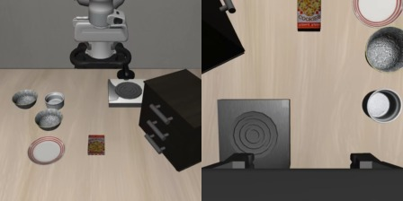
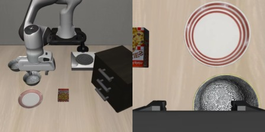

A worked example / LIBERO Spatial, episode 0
Follow one observation.
“Pick up the black bowl between the plate and the ramekin and place it on the plate.”
Images + labels: real LIBERO simulation data. Numeric model outputs: dry run, random weights, reduced width. No trained policy is demonstrated.
The input is the current observation.

It also receives the instruction above and an eight-value robot state: end-effector pose and the two gripper positions. At inference it sees the current frame, not a clip of the future.
The demonstration label
32 actions × 7 control valuesThese are the stored control values, before normalization. Dataset labels are x, y, z, roll, pitch, yaw and gripper. They are not joint angles. Heatmap rows follow that order; columns run from action 0 to 31. Green is positive, orange is negative.
An image becomes tokens, then richer tokens.
The autoencoder compresses pixels into learned latent features. A projection turns each latent patch into a token. The overlaid grid shows token positions, not isolated image crops: the encoder's receptive fields overlap.
Why 30? That is the depth inherited from the pretrained Wan2.2-TI2V-5B backbone. It is not the number of video frames. Each layer updates the same token positions using attention, instruction/state conditioning and a feed-forward block, with residual connections.
Each layer also projects token features to keys K and values V. We keep those tensors for the action expert. Here is token 0, head 0, in the actual reduced-width random run:
Production K and V per layer: [1, 98, 24, 128]. This probe: [1, 98, 2, 6]. The same token and cache layout, with much smaller feature vectors.
A cache is saved K and V, not an attention matrix.
Each action token makes a query Q. Query–key matches set the weights; their weighted sum of V supplies context. The matrix below is from Faster-WAM, so the video keys and values have already been fused across the 30 layers. Q changes during denoising. The observed video K and V do not, so the model stores them once and reuses them.
Action queries × video keys
Exact cells from head 0, inference step 1, first four action queries. Eight of 98 video columns shown. The softmax also includes 32 action-token columns, so this excerpt does not sum to one. These random-weight scores have no learned semantic meaning.
Show the complete 4 × 130 matrix
Two targets, trained together.
Video expert

Predicts the flow velocity for noisy future video latents. The observed frame stays clean and is excluded from video loss.
Action expert
Predicts the flow velocity for the demonstrated 32 × 7 action chunk. Its loss also trains the video backbone through the cached context and fusion.
target velocity u = ε − X
L = λv w(σv) MSEvalid(fv, uv) + λa w(σa) MSEvalid(fa, ua)
X is a recorded action chunk or encoded future video; ε is sampled Gaussian noise; σ is its noise level. Each expert predicts a velocity f, not the clean target directly. MSE averages squared errors over valid target elements. Here λv = λa = 1.
One action coordinate inside that loss
Actual LeRobot training_loss on this sample. All weights, including VAE/text, are random with reduced widths. This loss is a code-mechanics example, not a trained-model loss or performance result. The production recipe freezes the pretrained video autoencoder (VAE) and text encoder, initializes the video Transformer (DiT) from Wan, and jointly trains the video Transformer, action expert, fusion and state projection. Paper: training objective and settings.
At inference, there is no label to follow.
Keep only the observed image, instruction and robot state. Prefill video K/V once. Start 32 actions from Gaussian noise and apply ten action-expert updates. No future video is generated.
These are computed outputs of this random-weight probe, not useful robot commands. The demonstrated label is shown for comparison; it is not supplied during inference. The chart uses normalized control coordinates. A trained checkpoint is required for meaningful predictions.